Natural Language Generation and Neural Machine Translation¶
量子计算为什么快？- 因为模拟了从s到d的光的路径，走遍了两点之间的所有路径找到了最优，把一个问题设计成一个优化问题之后可以通过量子探索所有路径，相干抵消其他路径，坍缩至唯一保留的最优路径。
- 判别和生成有什么关系？- 如果可以生成一样东西，那么自然就很容易判别它；因此生成任务本身对理解能力的要求很高。
- 目前我们已经将所有的处理任务都转化成了生成任务。
1 NLG¶
自然语言生成是很多任务的子模块：
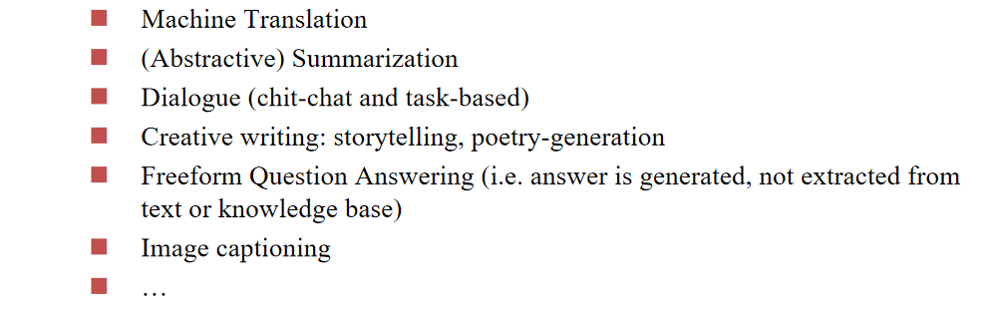
Language Modeling - 语言模型：在窗口内上文的条件下next word的概率：
字典里面所有词的\(P\)相加应该等于1，这是一个概率分布。
由于概率值一般都比较小，所以我们在概率前加一个log，比较好把控精度。
我们给语言模型加入条件，就是conditional language modeling：

对给定的任务，我们加入特定的condition \(x\)，并通过RNN先编码之后作为条件概率的条件。
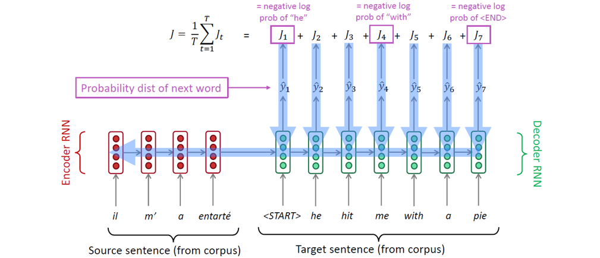
1.1 训练过程¶
在训练过程我们的反向传播调整同时涉及生成阶段和条件编码阶段。
在训练过程中，我们将gold（也称为reference）目标句子（前面的正确的预测结果）输入解码器，不管解码器预测什么。这种训练方法被称为teacher forcing。
但是这样会导致实际应用过程中的错误累积和放大。我们考虑设置一个训练过程中逐步降低的比例\(q\)，在前面预测错误的情况下以\(q\)的概率纠正即输入正确的前文，否则不进行纠正。
也可以采取强化学习的方式，只告诉句子整体好不好，不指出具体的错误。
1.2 隐空间传递¶
如何把编码器的编码结果向量给解码器？
- 有可能编码器输出的向量和解码器读入的向量维度不同，需要做transformation： 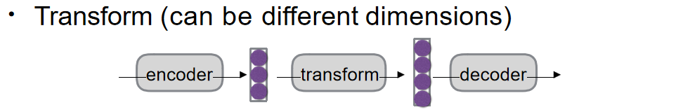
- RNN有可能出现遗忘，我们每次解码过程都输入一次编码器的输出向量： 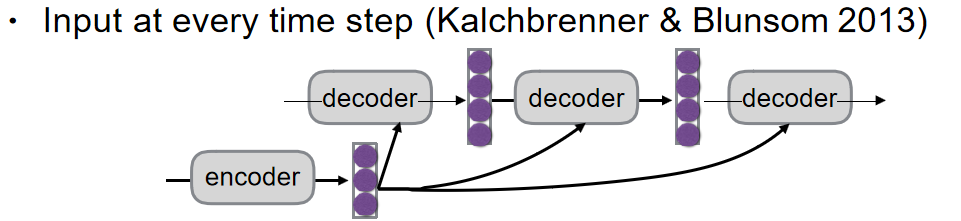
1.3 选词问题¶
Argmax - 每次选概率最大的词，是一个贪心的做法，每次提问的答案相同
Sampling - 以比较大的概率选择分数较高的词，所以不是百分百的概率选中概率最高的词。目前我们采用的是这个方法，每次提问的答案不同（有时候相同可能是因为采取了缓存优化）
分类：
1. 纯采样 (Pure Sampling):
- 过程: 在每一步
t，都从概率分布P_t中随机抽取一个词作为下一个词。 - 对比: 类似于贪婪解码，但不是选择概率最高的词 (argmax)，而是进行随机采样。
2. Top-n 采样 (Top-n Sampling):
- 过程: 在每一步
t，首先将概率分布P_t限制为概率最高的n个词，然后从这n个词中随机抽取一个词作为下一个词。 - 对比: 类似于纯采样，但会先截断概率分布，只保留概率最高的
n个词。 - 特殊情况:
n=1时，等同于贪婪搜索，每次都选择概率最高的词。n=V时，等同于纯采样，其中V是词汇表的大小。
- 参数
n的影响:- 增加
n: 会得到更多样化/更冒险的输出。 因为有更多的词被纳入考虑范围，模型更有可能选择一些不常见的词，从而产生更具创造性的文本。 - 减少
n: 会得到更通用/更安全的输出。 因为只有概率最高的几个词被考虑，模型倾向于选择更常见的词，从而产生更保守的文本。
- 增加
Beam search - 类似于下棋不止考虑一步，考虑后面好几步之后的局面采取当前的最优解（当然步数也有限制，不然可能性太多计算量太大），采取top-n策略并且每次实施剪枝，只保留概率（这里做了log处理）最大的k (beam size) 个路径，最后选择每个节点和最大的路径：
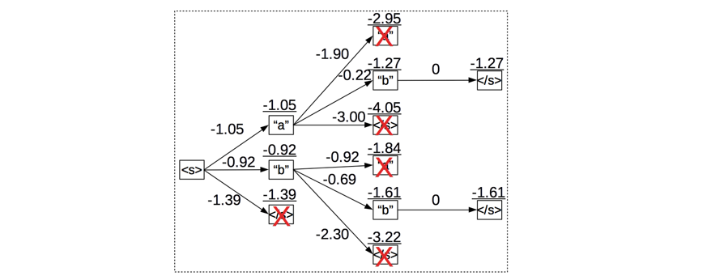
k太小： 容易陷入局部最优，生成质量差的文本。k太大： 计算成本高，且可能导致生成结果过于保守、缺乏创造性，甚至在某些任务中降低评价指标。
还有一个问题：当k比较大的时候倾向于选择比较短的输出。
Softmax Temperature¶
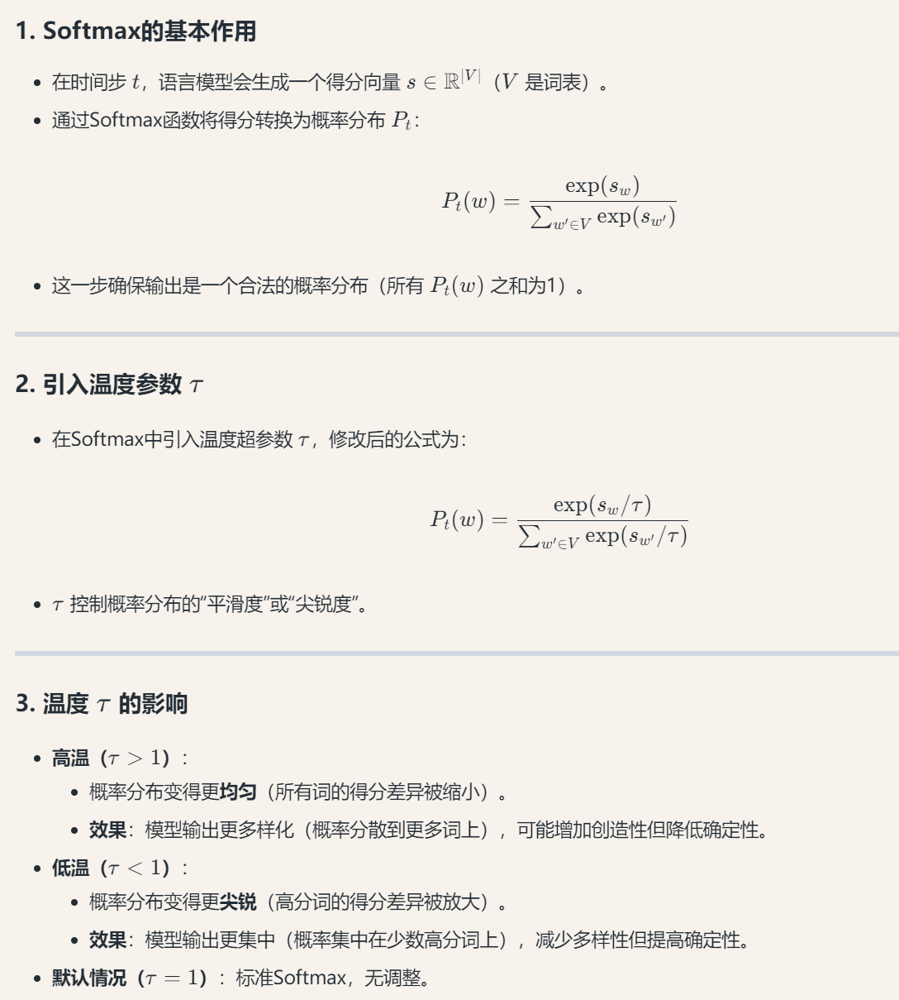
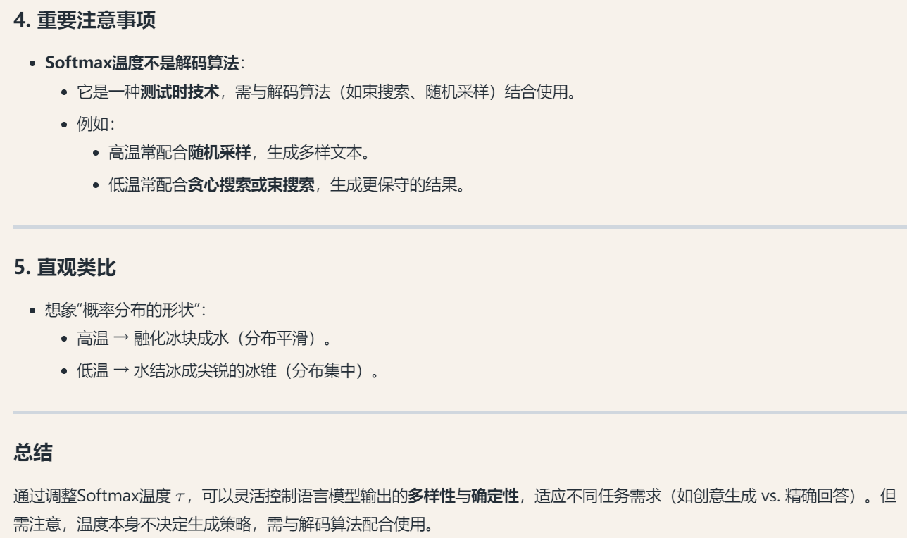
1.4 Ensembling¶
集成学习的核心思想是将多个模型的预测结果进行组合，以获得更准确和稳健的预测。
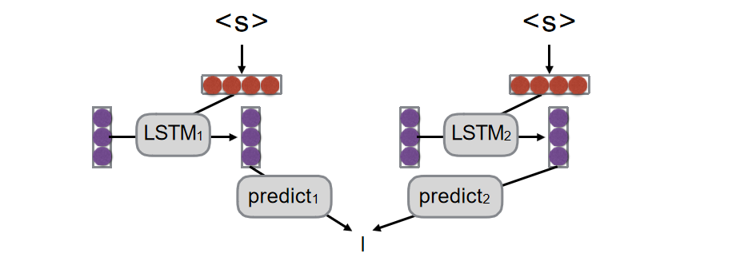
- 输入：两个 LSTM 模型（LSTM1 和 LSTM2）接收相同的输入序列（用红色圆圈表示）。
- 预测：每个 LSTM 模型独立处理输入并生成自己的预测结果（分别标记为 predict1 和 predict2）。
- 集成：将两个模型的预测结果进行组合（用底部的垂直线表示），生成最终的集成预测。
集成阶段的思路：让M1评估p2（p2在M1内的概率），M2评估p1。
1.5 Evaluation¶
1.5.1 Human Evaluation¶
"Final goal, but slow, expensive, and sometimes inconsistent."
1.5.2 BLEU¶
评估每个元组的生成比例，所有元组比例相乘最后乘上一个惩罚系数（简洁性的惩罚）：
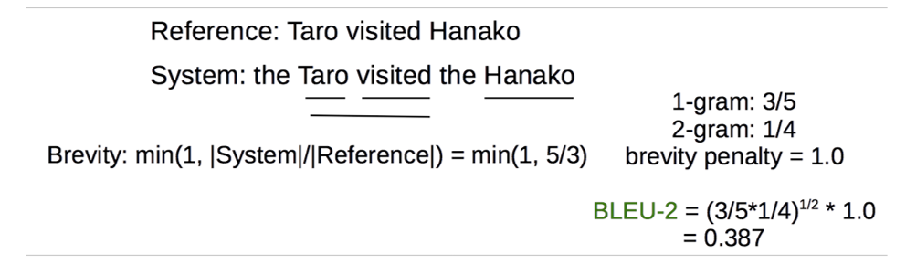
优点是简单；缺点是通常与人类评估不匹配，不利于比较非常不同的系统。
1.5.3 METEOR¶
在BLEU的基础上考虑释义，重新排序，以及功能词/内容词的差异。
1.5.4 Perlexity - 困惑度¶
\(ppx = -\log(likelihood)\)
likelihood就是我们说的似然函数：
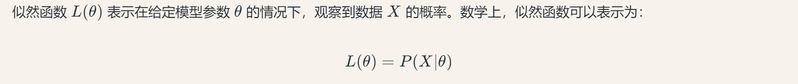
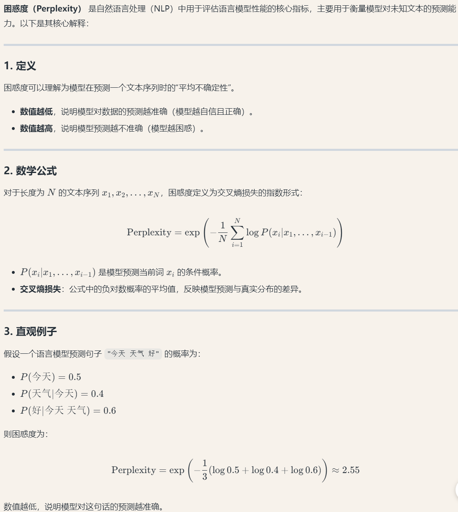
每个模型都有生成的时候的似然概率，给定一个人类写的比较流畅、好的语句，通过评估这个语句在这个模型上面的似然概率来定义这个模型的表现。
2 机器翻译¶
2.1 机器翻译历史¶
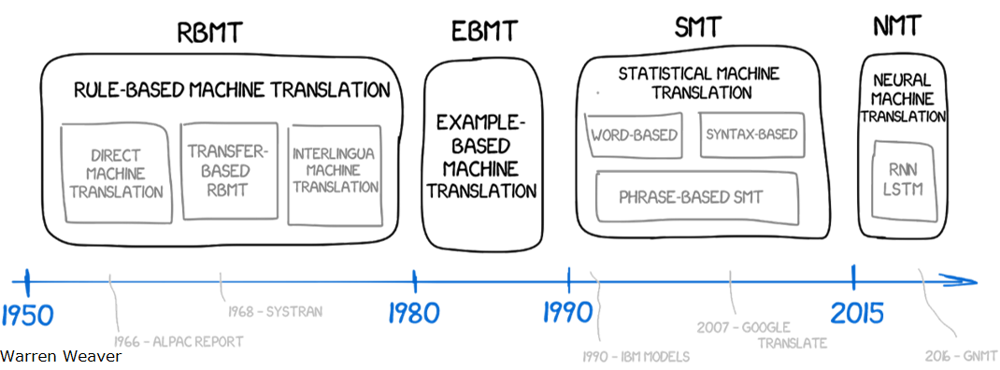
先是基于规则的直接翻译，而后期的统计机器翻译的核心是从语料数据里面学习一个概率模型。
2.1.1 SMT¶
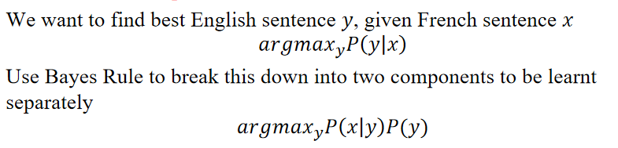
统计机器学习要解决的就是求上面这个公式（根据贝叶斯公式，进行了上述的问题转化，\(P(x)\)是常量，与\(y\)无关，在最大化的时候可以忽略），\(P(y)\)是母语群体说这句话的概率，\(P(x|y)\)则需要用到平行语料。
那么我们应该如何从平行语料中学习\(P(x|y)\)呢？ - 我们考虑\(P(x,a|y)\)，\(a\)是一个隐变量，表示了被翻译的词和翻译前的词之间两两的对应关系： 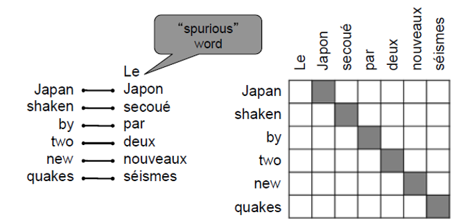 这也可以被理解成是一种attention。 - 而对应关系可能是一对多、多对一、多对多的，比较复杂。
2.1.2 NMT¶
sequence-to-sequence：不需要严格的建立一个对齐关系，范式就是先编码源语言的语句再用目标语言解码。
第一个版本：
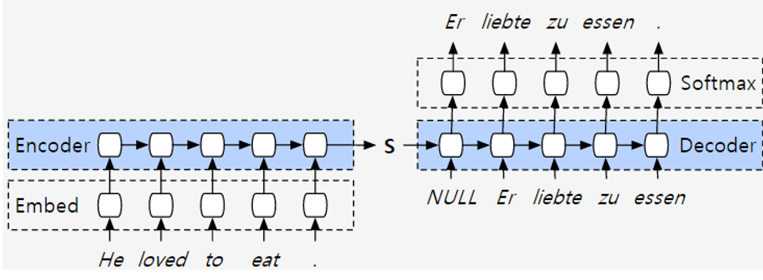
第二个版本添加了注意力机制：
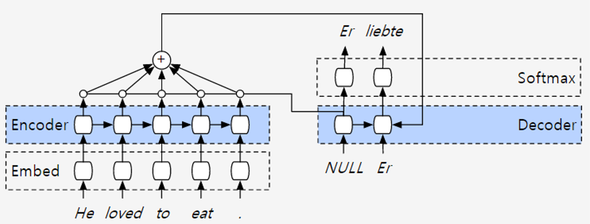
第三个版本使用了双向编码器层：
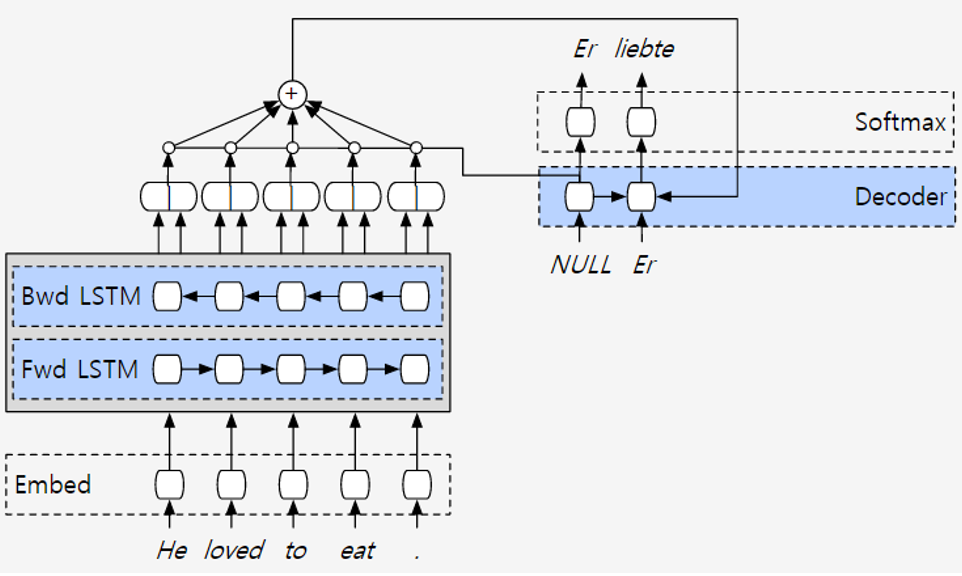
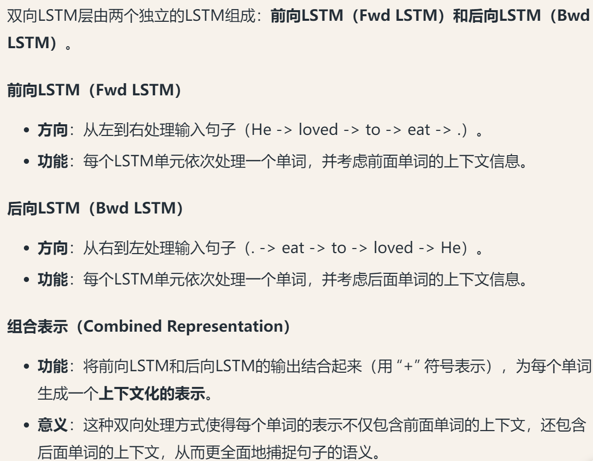
第四个版本将编码层叠深：
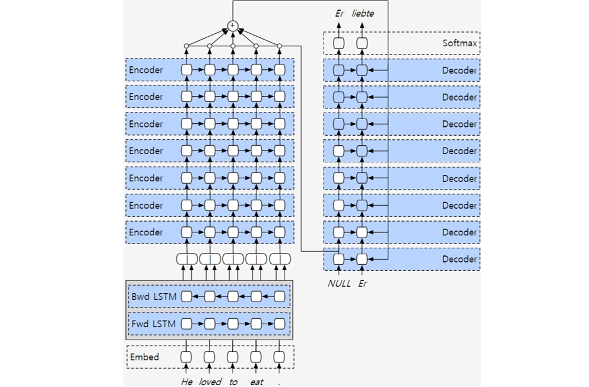
叠深了之后，hidden state可以记录更多的东西，而我们使用pipeline进行优化之后整体效能并没有因为参数的增加而大幅度下降。
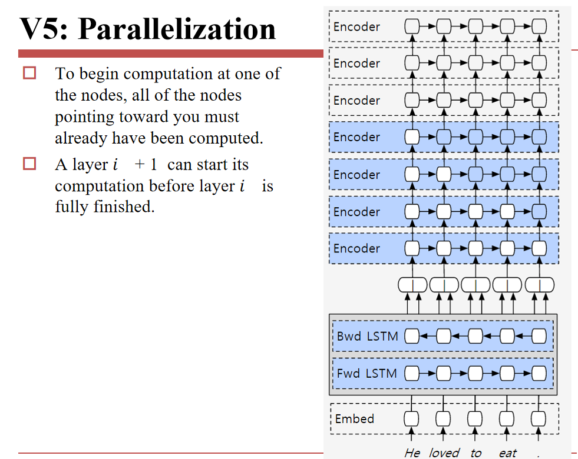
最后引入了残差连接（因为层数比较深）：
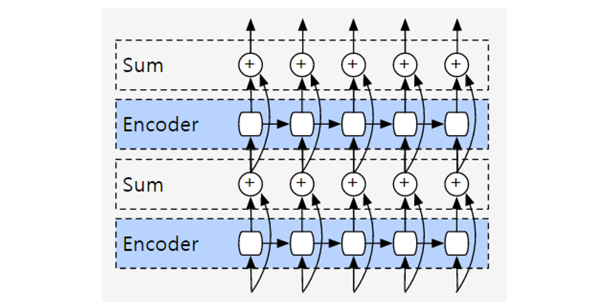
这个模型的表现非常好，但是训练的时间和数据成本太高，很难scale up。
为了解决这个问题，我们将所有类型的语言同时放入同一个模型训练，而通过在训练数据前面标记tag的方式去区分不同的语言。
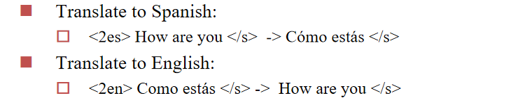
使用这个方法之后，我们发现这甚至可以实现zero-shot的翻译任务。
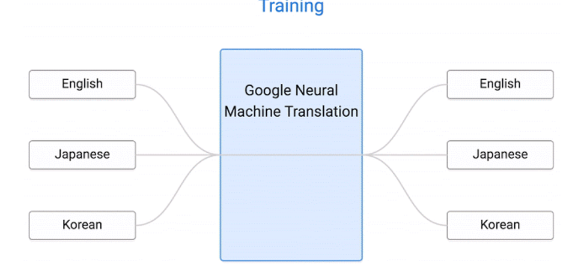
这是因为我们训练过程中可能诞生了一个和前后语言类型无关的中间状态，不同语言的同一个语义的句子在词向量空间的距离非常近。
并且我们还可以实现Code-Switching，混杂的语言类型的源语言可以被正确的翻译，两个语言的向量相加（混合）也可以发生神奇的结果（例如俄罗斯文和白俄罗斯文混合解码后是乌克兰文？）。